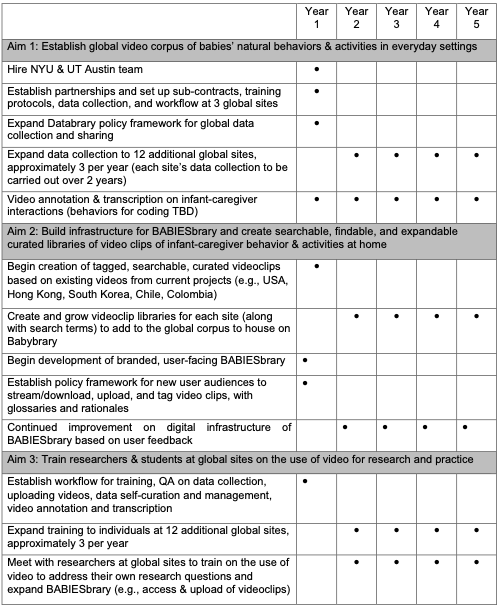

Data & Products
Video Data
All video data and spreadsheet export from parent-report questionnaires will be openly shared on Databrary at the project end. Full videos from exemplar home visits in Hong Kong and South Korea are publicly available. Curated clips and excerpts will be shared on the new “BABIESbrary” searchable global library created as part of this project.
Natural Activities
Researchers film one hour of natural activity, while mothers and babies go about their day. Videos contain faces and voices on camera. Mothers may go anywhere in their home, play with their babies or not, do chores, work, and bath, feed, or change their child.
Full 1-hour natural activity from Global BABIES - South Korea:
Full 1-hour natural activity from Global BABIES - Hong Kong:
Home Environment
House Walkthrough
Researchers film the entire home, focusing on capturing child objects like toys, books, feeding items, bathing items, clothes, and sleep areas.
Excerpts from Global BABIES - Hong Kong:
Full house walkthrough from Global BABIES - South Korea:
3D Rendering
Researchers use Matterport 3D technology to produce a digital rendering of family’s homes, including measurements of all spaces.
Excerpt from Global BABIES - New York:
Questionnaires
Researchers orally administer parent-report questionnaires during the home visit. Questionnaires are translated into local languages by each site investigator’s team. Topics covered include:
| Before Visit (over phone) | Demographics Gestational age & child health Home languages Sleep & childcare |
| Home Visit | Vocabulary Motor milestones Division of labor Family routines Household roster Child-rearing values |
| After Visit | Experimenter protocol notes Checklist for quality assurance |
Full questionnaire from Global BABIES - Hong Kong:
Workflow & Timeline
